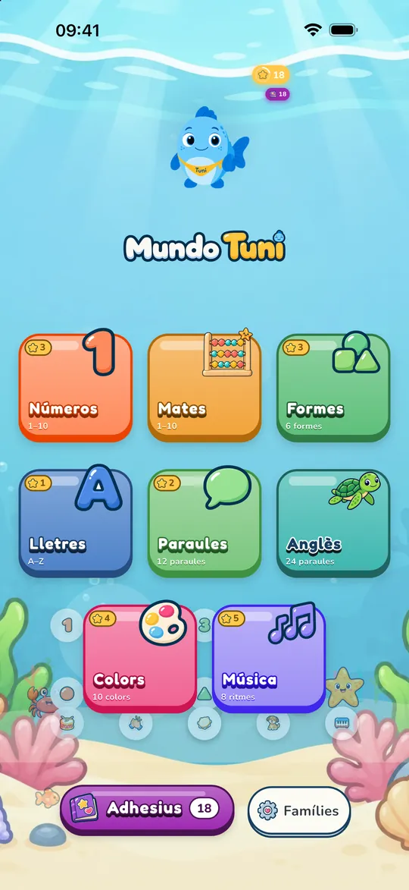
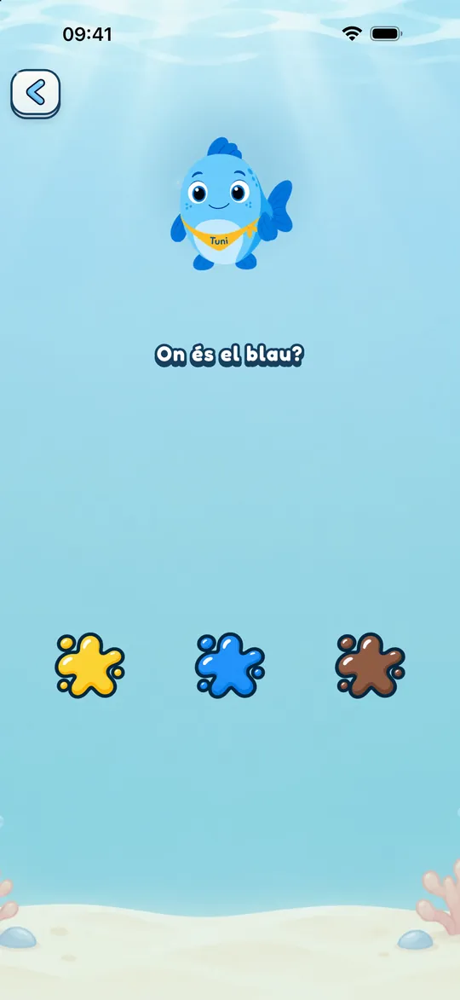
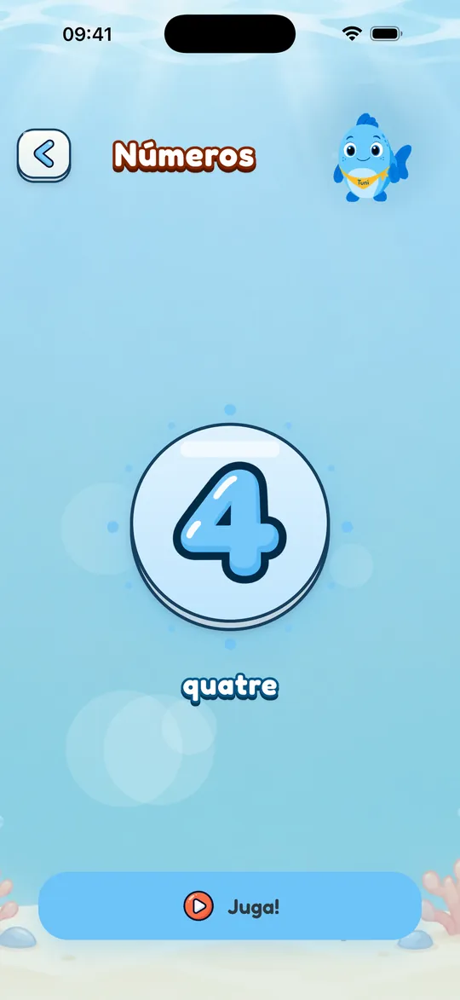
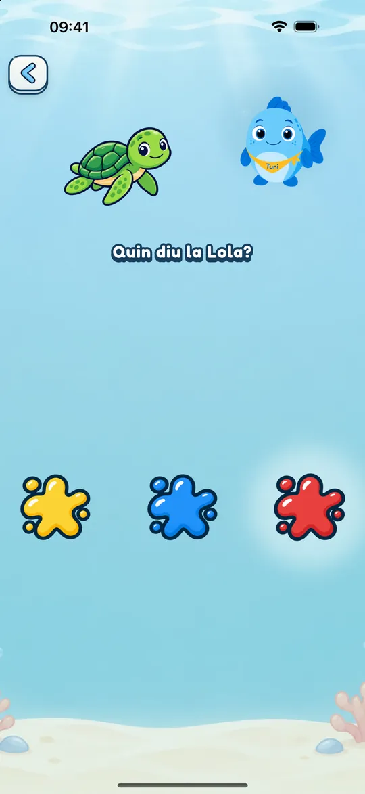
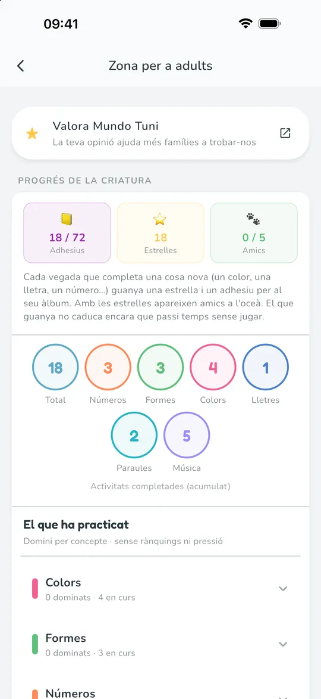

De 2 a 6 anys · Català · Español · English
Aprendre jugant, amb calma
Números, lletres, formes, colors, paraules, música, matemàtiques i anglès amb en Tuni, una cria de tonyina que ho explica tot amb la seva veu. No cal saber llegir.

- Sense anuncis
- Sense registre
- Funciona sense connexió


Feta per als més petits, i per a qui els cuida
-
Sense anuncis ni sorpreses
Ni anuncis ni registre. Les compres i la configuració queden darrere d’una porta per a adults.
-
Per a qui encara no llegeix
En Tuni guia cada joc amb la seva veu: en català, en castellà d’Espanya o d’Amèrica Llatina, o en anglès americà.
-
Al seu ritme
Sense ratxes ni comptes enrere. Si vols, poses un temps de joc i en Tuni s’acomiada amb calma quan s’acaba.
-
Les seves dades, a casa
El progrés es queda al teu dispositiu. L’app no demana el nom ni la data de naixement de la criatura.


Moltes apps infantils estan fetes perquè no parin. Mundo Tuni està pensada per acabar amb calma.
L’Acadèmia Americana de Pediatria explica que moltes plataformes es dissenyen per allargar l’ús: reproducció automàtica, premis freqüents, anuncis. Mundo Tuni no té anuncis, ratxes ni comptes enrere, deixa fixar un temps de joc i, si el fixes, acaba amb un final tranquil. I les guies pediàtriques demanen, abans que res, poca pantalla i, si se’n fa servir, acompanyada.
Vuit mons per explorar
Més de 190 activitats al catàleg complet. El que apareix depèn de l’edat que triïs.
-

Números
Comptar objectes, traçar xifres i aparellar.
-

Lletres
De l’A a la Z, amb traços i paraules d’exemple.
-

Formes
Sis formes per reconèixer, encaixar i classificar.
-

Colors
Deu colors per trobar, aparellar i pintar.
-

Paraules
Dotze primeres paraules amb el seu dibuix i la seva veu.
-

Música
Vuit ritmes amb tambor, campana, picar de mans i més.
-

Mates
De 4 a 6 anys: comparar, sumar i restar amb objectes, seriacions i ordenar.
-

Anglès amb la Lola
Vint-i-quatre paraules en anglès amb la Lola, la tortuga.
Cada món té contingut gratuït; la resta es desbloqueja dins de l’app.

Jocs curts, clars i tranquils
Cada joc demana una sola cosa, amb la veu d’en Tuni i sense textos per llegir. Els colors són suaus i els sons, tranquils.
- Jocs d’escoltar, tocar, arrossegar i traçar
- Als sis mons principals, una estrella i un adhesiu per cada element completat
- Subtítols d’en Tuni i ajuda per al daltonisme, si en necessites

Català · Español · English
En el seu idioma, i amb una amiga que en parla un altre
Tria l’idioma de joc en començar o canvia’l quan vulguis a la zona per a adults. El castellà té veu d’Espanya i d’Amèrica Llatina.
- Català
- Español (España)
- Español (Latinoamérica)
- English (US)
La Lola, la tortuga, ensenya 24 paraules en anglès americà quan l’idioma de joc és el català o el castellà. Quan és l’anglès, la Lola parla castellà.


Creix amb la criatura
Tu tries la franja d’edat, i l’app no la canvia sola. Les activitats i la dificultat s’adapten a cadascuna.
- 2
Petits
Números de l’1 al 5, endevinalles amb dos dibuixos i traços més fàcils.
- 3
Mitjans
Números de l’1 al 10, barreges de colors i jocs amb el primer so de les lletres.
- 4–6
Grans
Tot el que ofereix Mitjans i, a més, el món de Mates.


Zona per a adults
Tu decideixes com es juga
Darrere d’una porta per a adults hi trobaràs el seu progrés i tota la configuració.
- El que ha practicat, concepte a concepte, sense rànquings
- Temps de joc de 5, 10 o 15 minuts, amb pantalla de descans
- Idioma, edat, subtítols i ajuda per al daltonisme
- Amagar el racó d’idiomes, si ho prefereixes
Un adhesiu per cada assoliment
En completar un número, una lletra o un color, la criatura guanya un adhesiu per al seu àlbum. N’hi ha més de 70 als sis mons principals.


Del blog: guies per a famílies
Idees amb fonts per jugar i aprendre amb infants de 2 a 6 anys.
-
Abecedari català per a infants: com jugar amb les lletres i els sons
Com començar l'abecedari català amb infants de 2 a 6 anys: sons, lletres i què en diu el currículum. Sis jocs per fer a casa, sense fitxes.
-
Anglès a casa: la tercera llengua dels infants
Anglès per a nens a casa: què demana el currículum d'infantil, què sabem del bilingüisme i idees per a la tercera llengua, sense acadèmia.
-
Aprendre català jugant: idees per a famílies
Com aprendre català jugant: què diuen l'Idescat, el CREDA i la recerca sobre l'exposició a cada llengua, i idees per al dia a dia sense pressió.

Prova-la de franc
Descarrega-la per a la criatura i proveu junts el contingut gratuït de cada món. Si us agrada, podeu desbloquejar la resta dins de l’app.
- Sense anuncis
- En català, castellà i anglès
- Per a iPhone i iPad